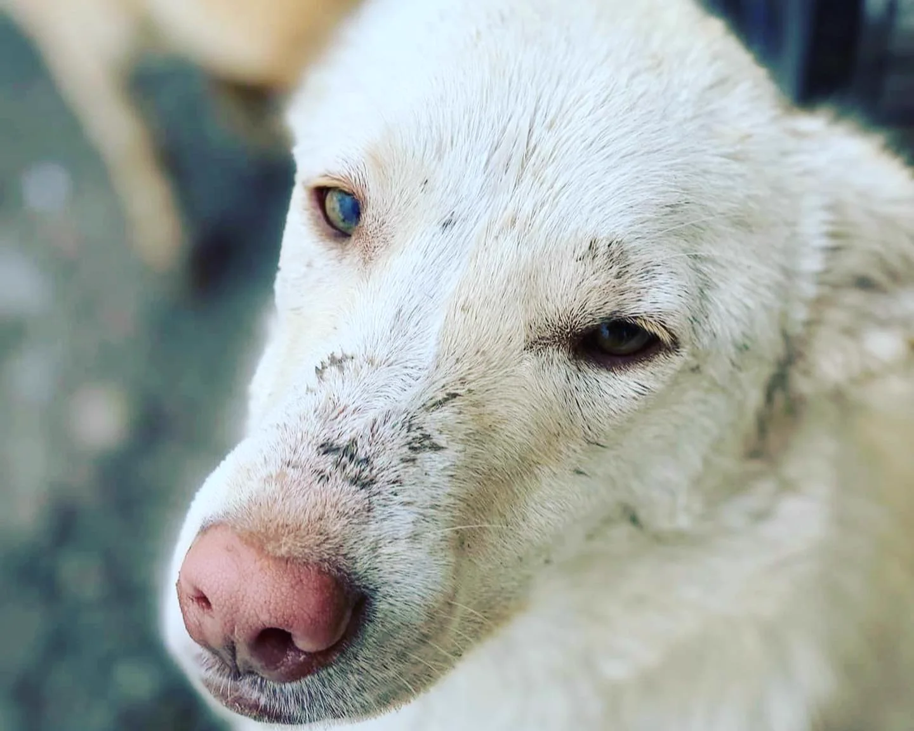
A Romanian dog rescue, run by one woman
Europe4strays
Building a better future for the stray dogs of Vrancea County: one rescue, one sterilization, one adoption at a time.
Movilița · Vrancea · Romania · since 2015
Chapter one
The dogs come to meet you
Every morning at the yard begins the same way: a pack of survivors walking toward whoever opens the gate. Scroll slowly. They are in no hurry.
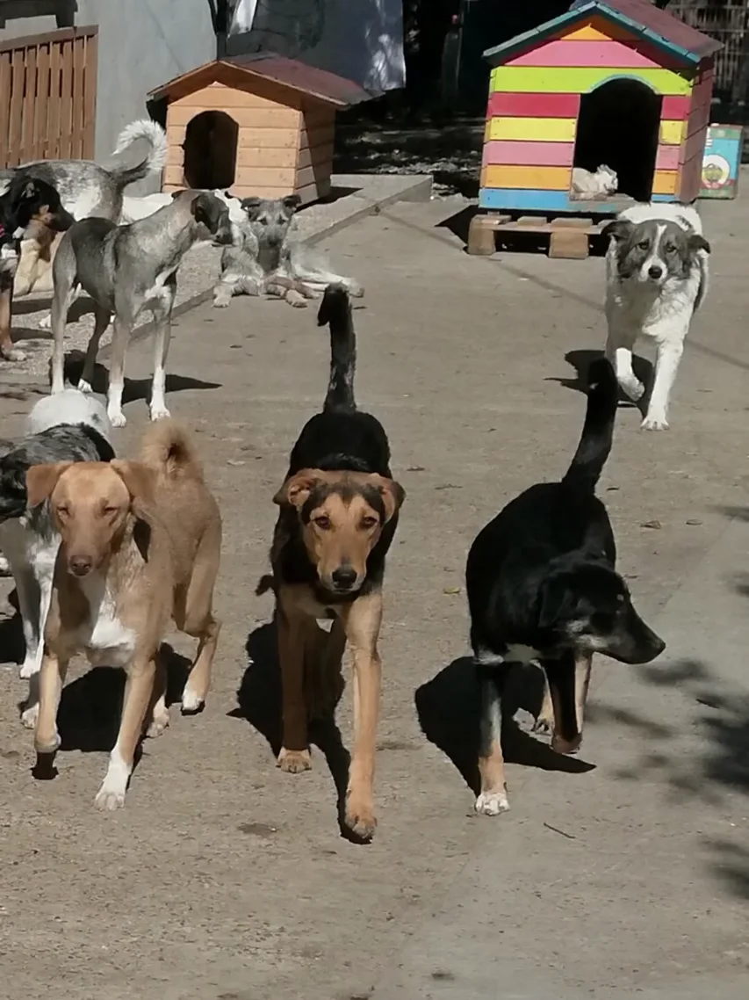
The yard at feeding time. Not one of them was born in safety.
*AI-animated from a real photo
Chapter two
Their faces
Three hundred and fifty is a number. These are not.
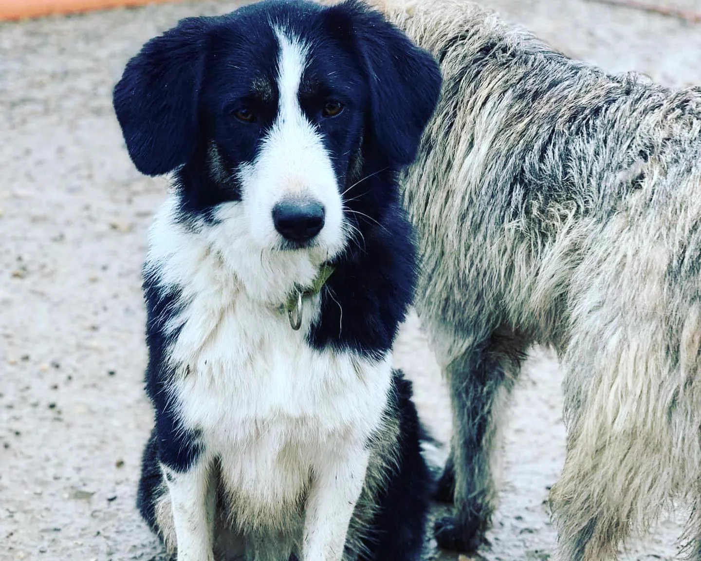
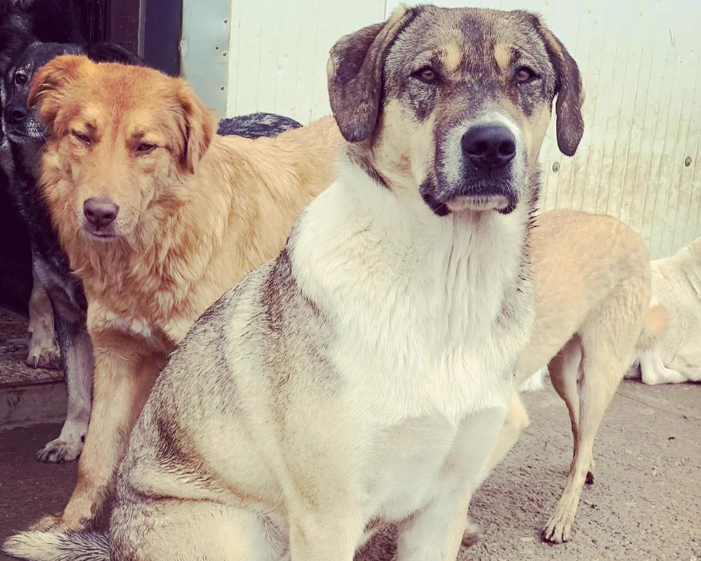
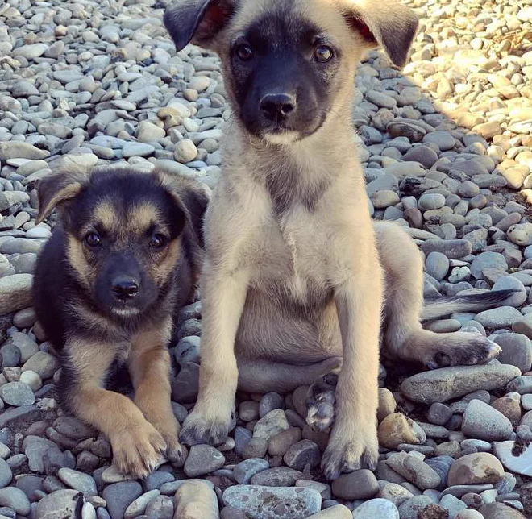
Some of these dogs are ready to travel to a family in the EU. How adoption works
Chapter three
The woman who stayed
Mirela Mistodinis spent half her life in Italy. In 2015 she came home to Movilița, her village in Vrancea County, and found the streets full of dogs nobody wanted.
Her first rescue was 24 puppies at once. Fifteen of them had parvovirus, a disease that kills most puppies who catch it. She found veterinary care for every one, and every one survived. Some were adopted abroad. Some never left her side.
Today she runs Europe4strays as a registered Romanian NGO, one hundred percent volunteer, together with her sister Neli, her husband Dragoș and a handful of activists at home and abroad. The dogs live in her house, in Neli's house, and in the lodge they are building.
Since 2018 the team has also run spay and neuter campaigns, covering the costs for families who cannot afford them. Sterilization is the only way this ever ends.
0
dogs in her care right now, fed and treated every single day
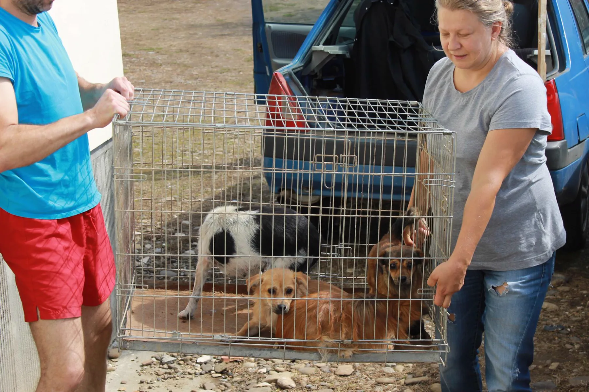
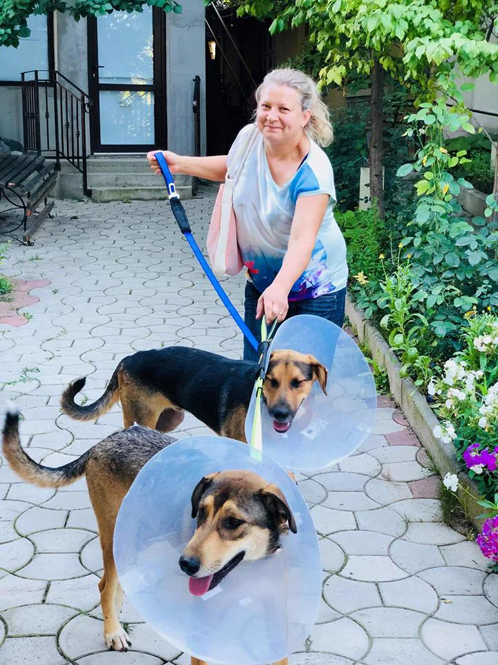
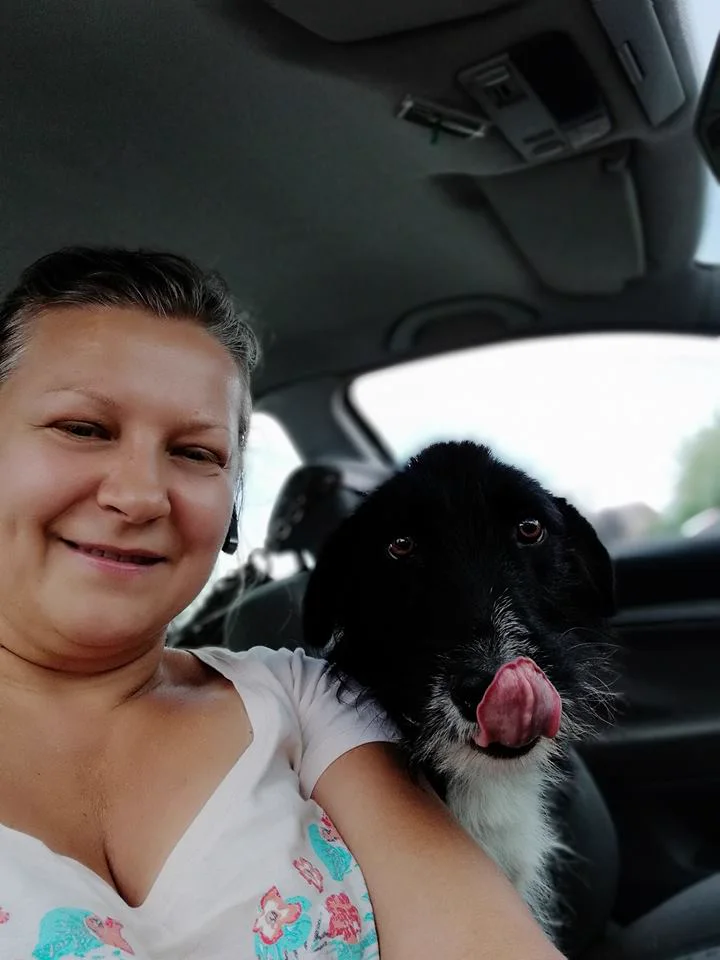
Not every dog is one of hers.
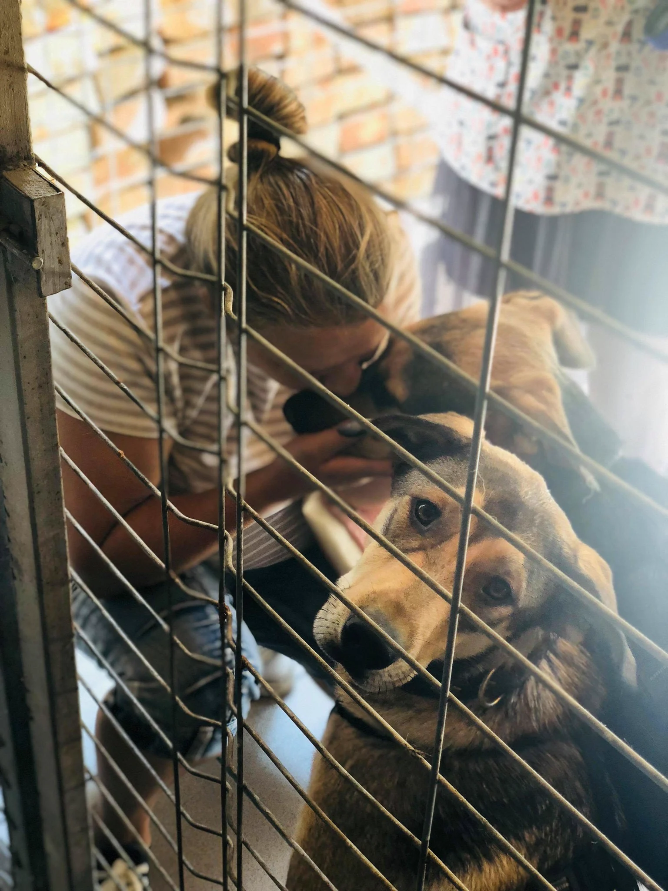
The public shelter at Golești. Many of her dogs once came from here. Today she takes them straight from the streets instead, before they ever end up behind a fence.
Vrancea, România
There is a film about all this
Hunderunde, the German channel whose donations fenced the plot and raised the main building, travelled to Romania and filmed the journey: "Hunde in Rumänien, eine Reise die wir niemals vergessen." It picks up right where Mirela's part begins.
Chapter four
The Cheerful Kindergarten
Grădinița veselă: a lodge on the family's own land, started in early 2020 with Mirela and Dragoș's life savings. A forever home for the dogs no one chooses, and a school for family life for the ones who will travel.
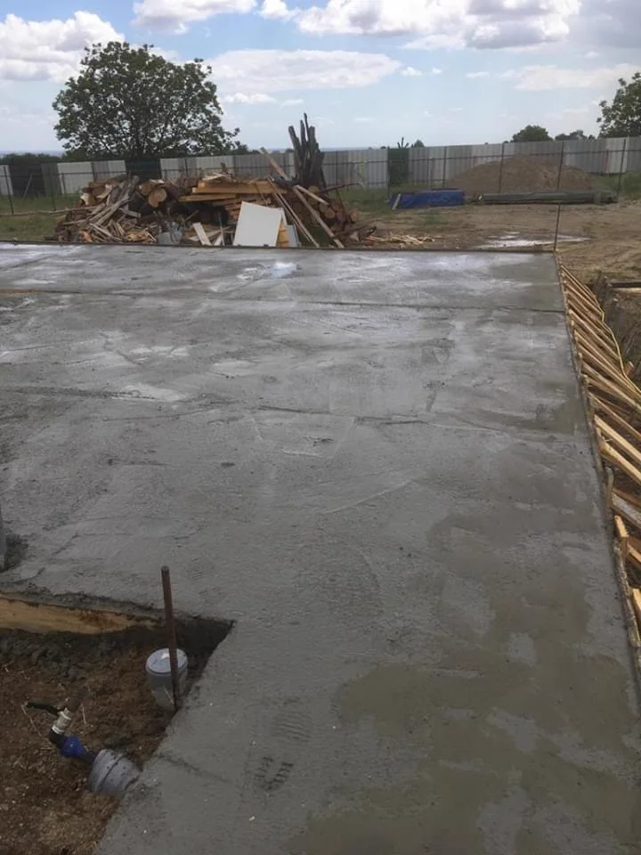
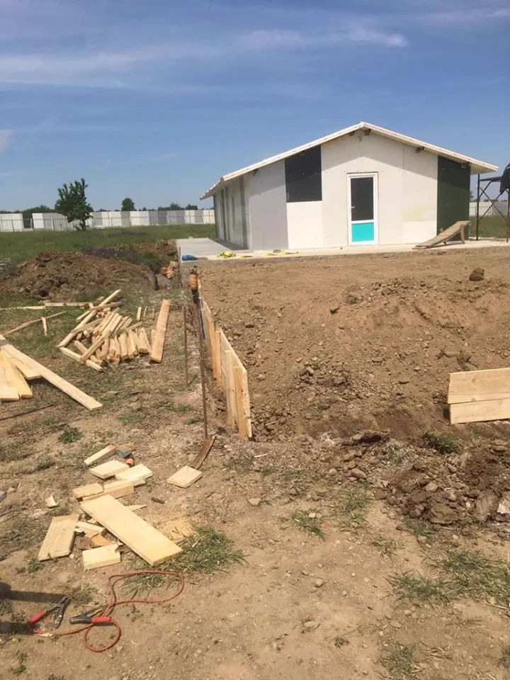
Built so far
- Fencing around the whole plot
- Water and electricity connected
- Main building in progress, made as comfortable as possible for the dogs, and now the cats too
- Second building: care room for puppies, quarantine area, food and supplies storage
- Planned: an education and training space
- Planned: a playground
Every donation goes into finishing this place, and into the food, medicine and surgeries that keep its residents alive.
Chapter five
What one person can do
Give
Money goes furthest: food, vaccines, deworming, surgeries, and the building work. Any amount, once or monthly.
RO91 BTRL EURC RT04 0991 0001
Send a parcel
Food, anti-flea and deworming treatments, blankets, beds, treats, toys, puppy supplies. Write to us for the delivery address.